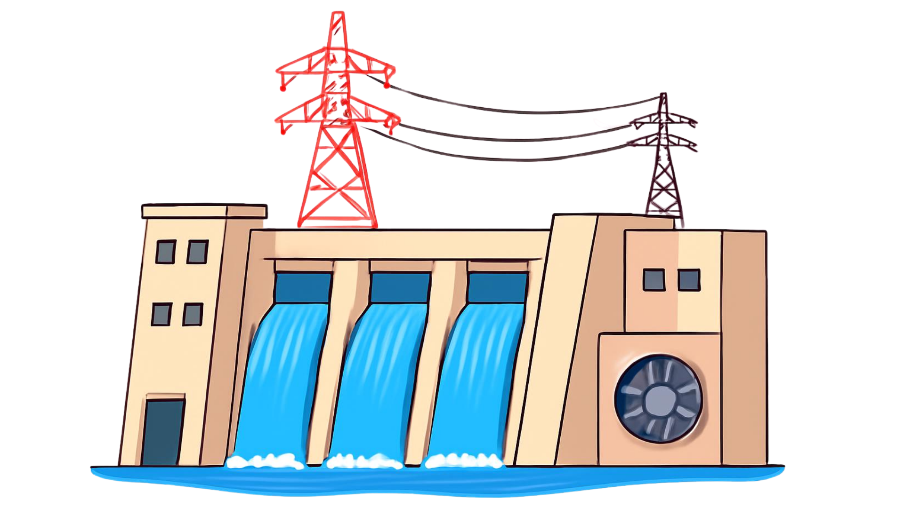

Pembangkit Listrik Tenaga Mikrohidro (PLTMH) adalah sistem pembangkit skala kecil yang memanfaatkan energi potensial dan kinetik aliran air (seperti sungai atau saluran irigasi). Melalui materi ini, kamu akan mempelajari prinsip kerja konversi energi air, komponen penyusun, serta parameter desainnya.

🎯 Setelah mempelajari materi ini, kamu diharapkan mampu:
Menjelaskan prinsip konversi energi kinetik dan potensial air menjadi listrik
Mengidentifikasi komponen utama PLTMH (turbin, generator, penstock, dll)
Memahami pengaruh *head* (beda tinggi) dan debit air terhadap daya listrik
Menentukan parameter desain PLTMH sederhana sesuai potensi wilayah sungai
⏱
Durasi
15-20 Menit
🎯
Fokus
Hydro Engineering
📚
Materi
10 Submateri
01
Prinsip Fisika
⛰️
Energi Potensial Air
Air yang berada pada ketinggian tertentu menyimpan energi potensial akibat gaya gravitasi.
🌊
Energi Kinetik Air
Saat air meluncur turun melalui pipa meluncur (penstock), energi potensial berubah menjadi energi kinetik aliran deras.
🌀
Konversi Mekanik
Hantaman aliran air memutar sudu-sudu turbin, mengubah energi kinetik air menjadi energi mekanik putaran poros.
🧲
Induksi Elektromagnetik
Putaran poros memutar rotor generator untuk menghasilkan arus listrik AC sesuai hukum induksi Faraday.
02
Cara Kerja PLTMH
Perhatikan alur konversi energi aliran air hingga menjadi energi listrik yang siap disalurkan ke rumah warga:
🏞️ Aliran Sungai
→
🌊 Penstock (Pipa Pesat)
→
🌀 Turbin Air
→
⚙️ Generator Listrik
→
🏠 Jaringan Beban
🏞️
1. Bendung & Intake
Mengarahkan sebagian aliran air sungai ke saluran pembawa tanpa merusak ekosistem sungai utama.
🌊
2. Penstock (Pipa Pesat)
Pipa bertekanan yang mengalirkan air terjun ke bawah untuk melipatgandakan kecepatan dan tekanan air.
🌀
3. Turbin Air
Semprotan air dari penstock mendorong runner/sudu turbin hingga berputar dengan kecepatan tinggi.
⚙️
4. Generator & Kontrol
Mengubah putaran turbin menjadi energi listrik AC yang frekuensi dan tegangannya distabilkan oleh controller.
🤔 Coba Pikirkan!
Mengapa dalam pembangunan PLTMH tinggi jatuhan air dan debit aliran sungai sangat menentukan kapasitas watt listrik yang dihasilkan?
03
Komponen Utama PLTMH
🏗️
Sipil (Intake & Bak Penenang)
Bangunan penangkap air dan penyaring endapan lumpur/sampah sebelum masuk ke pipa pesat.
🚀
Pipa Pesat (Penstock)
Pipa baja/PVC tebal yang mengalirkan air menuju rumah pembangkit dengan tekanan tinggi.
⚙️
Turbin Air
Komponen penggerak utama. Contoh jenis turbin: Pelton, Crossflow, Francis, atau Kaplan.
⚡
Generator
Penghasil energi listrik sekaligus pengatur kestabilan beban agar alat elektronik warga tidak rusak.
04
Faktor yang Mempengaruhi Kinerja PLTMH
📏 Beda ketinggian jatuhan air (Head/H).
💧 Volume/debit aliran air per detik (Debit/Q).
🌀 Jenis dan efisiensi turbin yang digunakan.
🍂 Kebersihan air dari sampah dan sedimen pasir.
🌧️ Musim (debit air sungai saat musim kemarau vs musim hujan).
05
🛠 Bagaimana Engineer Merancang PLTMH?
Seorang engineer harus mengukur potensi sungai lokal dan menyesuaikan komponen hidrolik agar daya listrik yang dihasilkan optimal dengan biaya yang masuk akal.
📐
Mengukur Head & Debit
Mengukur beda tinggi fisik lokasi dan debit air terkecil di musim kemarau.
Head (H): Beda tinggi tempat jatuh air, diukur menggunakan waterpass atau altimeter.
Debit (Q):Volume air per detik (m³/s), diukur dengan metode apung (float method) atau alat current meter di musim kemarau.
🌀
Pemilihan Jenis Turbin
Pilihan turbin disesuaikan dengan kondisi lokasi:
Pelton: Cocok untuk Head Tinggi & Debit Kecil.
Crossflow / Francis: Cocok untuk Head Sedang & Debit Sedang.
Kaplan / Propeller: Cocok untuk Head Rendah & Debit Besar.
📐
Dimensi Penstock
Menentukan diameter pipa agar gesekan di dalam pipa seminimal mungkin.
Kecepatan Air Optimal: Diatur antara 2–4 m/s agar rugi gesekan (head loss) kecil.
Estimasi Diameter: Dihitung dari rumus kontinuitas
Q = A × v (Debit = Luas Penampang × Kecepatan).
Material: Memakai PVC tebal, HDPE, atau Baja tahan karat.
💡
Rumus Potensi Daya
Daya listrik teoritis dirumuskan dengan:
P = g × Q × H × η
Keterangan & Satuan
P = Daya listrik yang dihasilkan(Watt /kW)
g = Percepatan gravitasi bumi (9,81 m/s²)
Q = Debit aliran air (m³/s)
H = Head / Beda tinggi jatuhan air (m)
η = Efisiensi total sistem (Turbin & Generator)
06
🔄 Tahapan Engineering Design
📊 Survei Sungai
→
📐 Ukur Head & Debit
→
🌀 Pilih Jenis Turbin
→
✅ Simulasi Daya
💡 Tips Engineer
Selalu gunakan angka debit minimum (debit kemarau) saat merancang PLTMH. Jika memakai debit puncak musim hujan, pembangkit tidak akan bisa beroperasi saat musim kemarau karena pasokan air kurang.
🚀 Persiapan Virtual Laboratory
Setelah ini kamu akan masuk ke laboratorium virtual untuk merancang PLTMH berdasarkan data profil sungai di pedesaan. Terapkan prinsip penyesuaian jenis turbin dan Head air!
07
Keunggulan & Tantangan PLTMH
✅ Kelebihan
Dapat beroperasi 24 jam nonstop (berbeda dari surya/angin).
Ramah lingkungan dan tidak mencemari air.
Biaya operasional harian relatif murah.
Mendorong warga menjaga kelestarian hutan/hulu sungai.
❌ Kekurangan
Sangat bergantung pada lokasi geografis (harus ada sungai/pancuran).
Debit air terpengaruh musim.
Investasi awal pembuatan bangunan sipil cukup besar.
08
💡 Tahukah Kamu?
PLTMH menghasilkan daya antara 5 kW hingga 100 kW, sangat pas untuk melayani listrik 1 desa terpencil.
Indonesia memiliki ribuan potensi sungai kecil di wilayah pegunungan yang belum terjamah listrik PLN.
09
📝 Ringkasan Materi
PLTMH mengubah energi potensial & kinetik air menjadi energi mekanik turbin dan energi listrik generator.
Daya yang dihasilkan sangat bergantung pada beda tinggi dan Debit (volume air).
Pemilihan jenis turbin (Pelton, Crossflow, Kaplan) disesuaikan dengan karakteristik aliran sungai.
10
✅ Apa yang Sudah Saya Pelajari?
☑ Saya memahami prinsip konversi energi air ke listrik.
☑ Saya memahami komponen sipil dan mekanikal PLTMH.
☑ Saya tahu hubungan Head, Debit, dan Pemilihan Turbin.
☑ Saya siap melakukan simulasi desain PLTMH di Virtual Lab.
11
🧠 Cek Pemahaman
Jawablah pertanyaan berikut untuk menguji pemahamanmu: